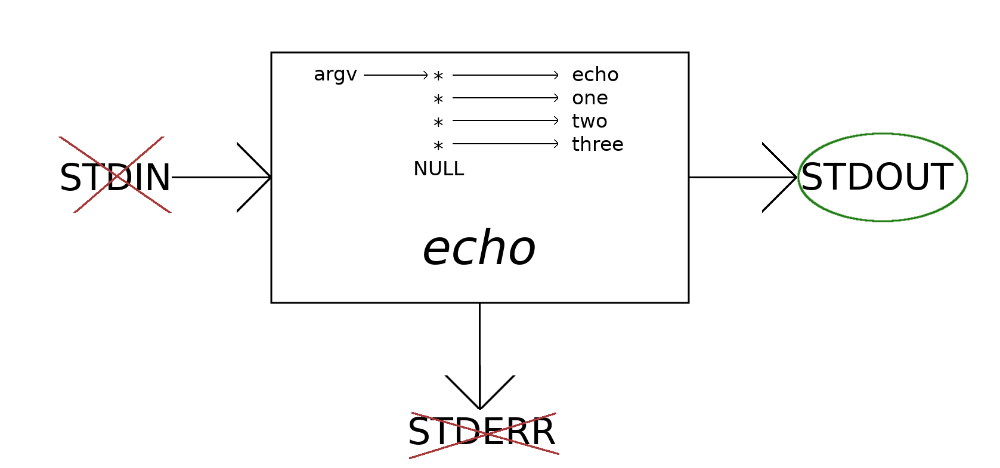

The command-line is uniquely *nix.
As a programming tool, it is exceptionally powerful:
Anything that can be done on a GNU/Linux system can be done through
the command-line alone.
The graphical user interface (desktop environment) is a superstructure;
it is often the case that
GUI interfaces are built on top of command-line
tools.
The Standard File Descriptors
Each process on a *nix system is created with three open files,
Standard In,Standard Out and Standard Error:
Although these files are opened for each process on the system, they
make the most sense at (and are used most often at) the command line.
Standard in is usually the terminal keyboard.
Standard out and standard error are usually the terminal screen.
Consider the echo utility.
This program reads each argument passed to it, and prints it to standard
out:
$ echo one two three
one two three
Neither STDIN nor STDERR are used.
Rather, the arguments are passed to the kernel in the
execve(pathname, argv, envp)
system call; they are placed within the address space of echo,
which simply reads them from itself, and prints them to standard out:

As each line is read by the shell, it is broken down into tokens, which
are delimited by space(s) or tab(s).
The first token (here, 'echo') is always interpreted as a command.
The other tokens are passed as arguments, so that our call to echo
passes three arguments.
Now consider the cat utility:
$ cat foo bar
<contents of 'foo'>
<contents of 'bar'>
PATH Environment Variable
Among new users (or perhaps just me), the PATH
environment variable is often a source of concern.
This variable explicitly declares the directories that will
be searched to locate an executable file when a command
is entered.
We can have a look at its value with,
Convention: $ and #
Introduction to Make
References
Kerrisk, Michael. The Linux Programming Interface. San Francisco, CA, No Starch Press, 2010.
Bryant, R. E., & O'Hallaron, D. R. (2016). Processes. In Computer Systems: A Programmer's Perspective (3rd ed., p. 732). Upper Saddle River, New Jersey: Pearson.